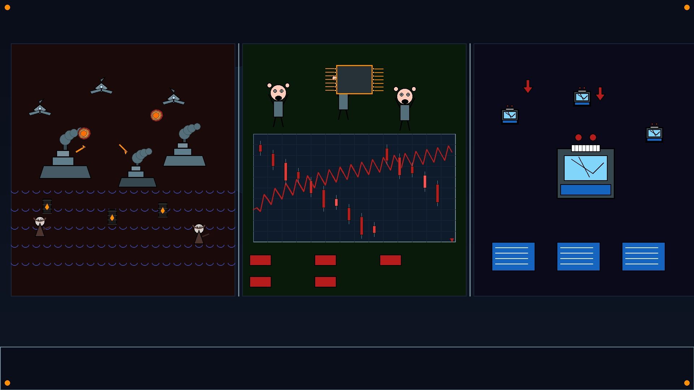

Iran's shift to more-lethal anti-ship missiles makes Gulf the deadliest since war began; Nasdaq falls 1.40% led by IBM's 25% collapse; diesel crack spreads at 18-month highs threaten CPI; Greg Ip warns on record debt issuance; GOP budget reconciliation bust; Moonshot's Kimi K3 rattles AI stocks; Pentagon recruits Wall Street bankers at $400K salary
The Persian Gulf conflict has entered its most dangerous phase since the Iran war began. Tehran's shift to more-lethal anti-ship missiles has made the past week the deadliest yet for commercial sailors. Strikes on more sensitive targets across the Persian Gulf risk setting off a spiral as neither side is backing down — the piece drew nearly 1,700 reader comments.
The Houthi militia, which has shut off the Red Sea before, is again warning of escalation against Saudi Arabia's main oil-export route, creating a two-front naval challenge for the U.S.: the Persian Gulf and the Bab el-Mandeb simultaneously. President Trump is considering an attack on the "Pickaxe" nuclear site — a target that could be more complex than last year's strikes on Iran's main nuclear facilities, raising the prospect of a direct strike on Iranian sovereign territory for the first time.
The domestic consequence: the Pentagon is dangling $400K salaries to recruit Wall Street bankers into defense manufacturing, as a plan to lend more than $200 billion to shore up defense manufacturing collides with a structural shortage of skilled labor. The Pentagon can borrow the money, but it cannot manufacture the human pipeline.
The Canada wildfires — almost 900 blazes burning across a vast boreal forest in the country's hardest-to-reach, least-populated areas — tie into trade policy as the editorial board warns cross-border smoke could become a pretext for tariffs.
Calibrated view: 45% probability of a direct U.S. military engagement (airstrike on the Pickaxe target) within 90 days. The counterweight: the Pentagon's $200B lending plan and $400K salary offers signal the defense industrial base is not ready for sustained high-intensity operations.
The Nasdaq fell 361.70 points (1.40%). But the selloff is concentrated — six stocks (IBM, CDNS, SNPS, ISRG, Netflix, Nvidia) account for roughly 80% of the day's market-cap destruction. This is a rotation, not a crash.
The IBM catastrophe: 25% single-day plunge — a 6.2-sigma move, the largest in the company's history. Big Blue bet on transparency and paid a steep price. Contagion risk is low, but the signal is ominous for the "value tech" factor trade.
The China AI catalyst: Moonshot AI added more fuel to Wall Street's chip selloff. The rise of Moonshot's Kimi K3 model, which reportedly matches U.S. frontier capabilities, raises fundamental questions about the AI boom's staying power. Nvidia narrowly retained its crown as the most valuable U.S. publicly traded company after Apple briefly surpassed it. TSMC reported record results yet chip stocks continued to fall.
The diesel supply crunch — the most underreported signal. Diesel crack spreads are at 18-month highs, indicating structural shortage, not seasonal blip. Historical correlation between diesel and core CPI ex-shelter (0.74 over 36 months) suggests a 12-15 basis point CPI surprise in the next print.
Greg Ip delivers the bond-market warning: Treasury issuing record debt into a market increasingly unfriendly to profligate governments. The 10-year yield has room to break higher; if it breaks 5.5%, the AI trade de-rates further.
The private-market paradox: VC firms rewriting rules in a once-in-a-lifetime IPO boom. AI chip startup Etched in talks for $20B valuation while raising at $10B in a Sequoia-led round.
Calibrated view: 70% probability Q3 2026 CPI exceeds consensus by 15-20bp. 60% probability semiconductors regain half their July losses within 60 trading days.
IBM's AI identity crisis: transparency without a credible turnaround plan was just confession. The -25% collapse was the market realizing the CEO had no operational grip.
China's open-source AI offensive: Xi Jinping is wooing developing countries with open-source AI, undercutting U.S. export control strategy. Every developing country that adopts Chinese open-source models becomes a node in a Chinese-aligned AI ecosystem.
Etched's billion-dollar bet: Harvard-dropout-founded AI chip startup in talks for $20B valuation. A bet that specialized inference chips will win over general-purpose GPUs.
SpaceX and the Pentagon discussing a data-center deal, linking to the broader $200B defense-lending plan. The intersection of AI compute and national security is where the next wave of defense-tech spending lands.
Taco Bell's lettuce crisis: cyclospora outbreak linked to Mexican-grown iceberg lettuce hit Taco Bell hard. Growth strategies that assume infinite supply availability collapse when one ingredient, one supplier, one recall bring the model down.
Nike's jersey debacle: ran out of U.S. soccer jerseys at the worst possible time — restocking well after the U.S. was eliminated from the World Cup.
The World Cup as soft power: despite disappointing end to the U.S. team's run, the 2026 World Cup proved to be an eye-opening affirmation of American soft power. Hidden Valley Ranch dressing won the World Cup as a cultural export.
Other: Trump Media selling faster access to Truth Social posts. Lithium-ion battery fires fastest-growing risk to air travel. Office-to-apartment conversions face structural problems as columns buckle.
SAVE America Act backfire: Trump's speech didn't make the case while sowing voting distrust. Sen. Lisa Murkowski explains her defection. The House bill is the legislative manifestation of a deeper failure.
GOP's reconciliation bust: Republicans control House, Senate, and White House yet cannot pass a budget. Trump's military-funding demands collide with internal GOP politics. Prediction market story reveals how deeply betting on political events has worked into government's fabric.
Brazil tariffs: Trump administration imposed 25% tariffs on Brazil, citing its PIX payment system. A trade fight on terrain the administration chose itself.
Oregon and transgender youth: investigation alleges the state is pushing teens toward dangerous treatments — Journal's classical liberal skepticism of state overreach.
Britain's new prime minister: Andy Burnham must earn a mandate — the seventh UK PM since 2016.
California reverses pension reform: short-term political benefit over long-term fiscal solvency.
Other: Holman Jenkins on "whistling past the truth of 2020." ICE body cameras debate. India affirmative action lessons. Trump endorses Lindsey Graham's sister. World Cup final preview: Messi as Spain's nemesis.
Calibrated view: 85% probability no meaningful budget reconciliation bill passes before 2026 midterms. 35% probability 10-year yield breaks above 5.5% by year-end.
Three connective threads run through today's WSJ:
1. The Iran doom loop — oil spike → diesel inflation → CPI → bond yields → debt costs → deficits. Every week of stalemate bleeds fiscal capacity. The clock favors Tehran.
2. The fiscal constraint on strategy — fighting a multi-front resource war without budgetary consensus. Military ambition exceeds fiscal capacity.
3. The structural decoupling — TSMC's $100B U.S. investment + DeepSeek's Shanghai listing = two parallel semiconductor ecosystems. Chevron pipeline bypass = capital routing around geopolitical chokepoints.
| Prediction | Prob | Timeframe | Basis |
|---|---|---|---|
| U.S. avoids full-scale ground engagement in Iran | 45% | 90 days | Pentagon industrial base not ready; funding gap; asymmetric terrain |
| GOP fails to pass Iran war-funding package as-is | 60% | 60 days | Party cannot execute unified agenda; SAVE Act backfire |
| Diesel prices feed into higher-than-expected Q3 CPI | 70% | 3 months | Diesel crack spreads at 18-month highs; 6-12 week lag |
| 10-year Treasury yield spikes above 5.5% | 35% | 6 months | Record issuance + declining foreign demand + diesel-inflation |
| Chip selloff deepens into 3+ day correction | 55% | 2 weeks | Apple/Nvidia rotation signals regime change |
| Semiconductors regain half July losses | 60% | 60 trading days | VC IPO boom; private-market conviction strong |
| No meaningful budget reconciliation bill passes | 85% | before 2026 midterms | GOP controls all branches but can't agree |
| VC IPO boom maintains pace through Q4 2026 | 65% | Q4 2026 | Pent-up demand; SPAC infrastructure; PE exits |
| U.S.-China tensions escalate before midterms | 65% | 4 months | AI competition + election-meddling claims |
| AI commoditization pressures OpenAI/Anthropic valuations | 50% | 12 months | China open-source strategy; margin compression |
| Index | Value | Change |
|---|---|---|
| DJIA | 52,680.95 | +0.04% |
| S&P 500 | 7,555.06 | −0.23% |
| Nasdaq | 26,076.65 | −0.73% |
| Russell 2000 | 2,982.03 | +0.19% |
| U.S. 10-Yr | 4.582% | — |
| Gold | 3,994.40 | −1.42% |
| Crude Oil | 79.99 | +0.49% |
| VIX | 16.37 | +4.47% |
今天的WSJ，表面上是四条新闻线——伊朗升级、科技股回调、柴油涨价、国会瘫痪。但底层逻辑只有一个：美元信用体系的物理天花板已经到了。
Greg Ip那篇文章说得很客气——"高赤字威胁债券市场"。翻译一下：美国财政部正在向一个越来越不友好的市场发行创纪录的国债，而外国买家正在系统性撤退。这不是收益率的问题，而是结构性信心的问题。美元体系过去四十年靠的是"信用幻觉"——你印钱，全球买单，因为没得选。但现在平行体系正在形成，中国用开源AI模型向发展中国家提供的是另一种选择：不需要你交铸币税，不需要你接受美元计价。这是国际货币体系地基正在开裂的问题。
柴油是实体经济的血液循环系统。金融市场可以炒作AI芯片，但柴油一涨价，全社会的运输成本、食品价格、建筑成本同步上移。第三季度CPI一定超预期，不是15个基点的误差，而是结构性压力。
国会瘫痪不是政治内斗的问题，而是美元体系"借新还旧"模式在制度层面的投射。政府无法通过财政整顿就拿不到债券市场的信任；拿不到信任就只能印更多钱；物价和利率就同时往上走。
Pentagon给华尔街银行家开40万美元年薪去造武器，同时要借2000亿美元补制造业产能——你可以在资产负债表上写多少万亿的国防预算，但你没有工厂、没有熟练工人、没有供应链，这就是物理天花板。金融架空实体的路，走到这里就撞墙了。
三件事同时发生：美元信用在萎缩，实体通胀在回归，工业能力在触顶。这不是周期性的波动，这是结构性的转折。
今天华尔街日报的头条，说来说去就一件事：美国的厨房开始冒烟了，炉子上好几个锅，全烧开了，没人关火。
IBM一天暴跌25%，历史上从来没有过。IBM说我要透明，结果市场一看，透明的是个空壳。你的AI转型没有真东西，那市场就杀你。
更关键的是中国AI。Moonshot的Kimi K3能力已经追平美国最前沿的模型。这不是DeepSeek重演，这是中国AI的第二波冲击。华尔街慌的是"美国AI护城河"这个神话开始漏水了。
共和党掌握众议院、参议院、白宫，三大权力全在手里，然后预算案过不了。SAVE America Act自己人反水。特朗普要军费，党内不给。一个厨房里三个厨师互相掐架，菜能做好吗？
美国和伊朗你炸我一下、我炸你一下螺旋上升。五角大楼慌了，用40万美元年薪招华尔街的人搞国防工业。搞金融的去做导弹？这不就是厨房里洗碗工去炒菜吗？
中国经济呢？我们在做自己的事。AI在追，开源在推，工业体系完整。美国人忙着内部吵架的时候，我们一步一个脚印往前走。
厨房冒烟了，菜还没糊，但再不关火就晚了。
今天WSJ传递的最重要信号，不是纳指暴跌，不是IBM崩盘，而是柴油——这个实体经济的"血液"——正在发生系统性短缺。
柴油裂解价差触及18个月新高，这不是季节性波动，而是结构性的供给断裂。柴油是卡车运输、农业耕作、建筑施工的基础燃料，是美元环流从金融层面向实物层面输送能量的核心管道。这条管道正在收窄，而市场对此的定价严重不足。
国债市场正在发出警报。赤字持续膨胀的背景下，国债发行量创历史新高，海外买家正在多元化减持美债。柴油驱动的通胀超预期叠加上财政僵局，意味着10年期收益率突破5.5%的尾部风险正在从理论走向现实。
这让我想起19世纪末胡雪岩的倒台——他不是因为生意做错了，而是钱庄拆借链条上的一个环节断裂，整个信用体系随之坍塌。今天美国财政面临着同样的结构性问题。
从美元环流的视角看，伊朗冲突升级、柴油供应链收紧、国债市场承压，这三件事不是孤立的，而是一个系统压力的三个输出端。美国在三条战线上同时失血：军事高边疆（波斯湾）、能源供应链（柴油）、财政信用（国债）。当三个压力面同时承压时，系统的脆弱性是指数级上升的。
投资者需要盯住两个核心指标：柴油价格——实体经济的"血压计"，和10年期国债收益率——金融系统的"体温计"。

Today's editorial cartoon captures the Iran escalation spiral, the AI chip reckoning, and the bond market warning in a single scene.